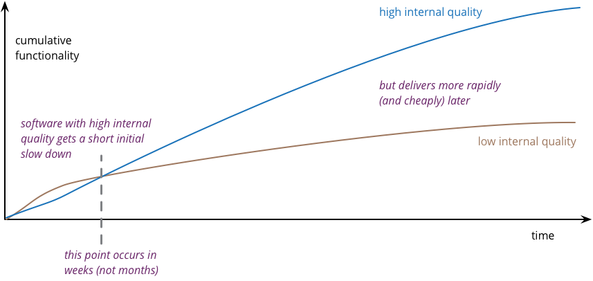

Agile Architecture
An introduction to software architecture in agile product development
Agile Architecture Principles
You are applying the agile and lean approach to your software products development. Your teams use Scrum or Kanban to deliver running software at least every two weeks. The product launch is a tremendous success. You will likely sell the solution for the next ten years.
How shall you define and nurture the software architecture of your product and insure a long living and high-quality solution? The experts tell you the design is emergent. What does it mean?
There are 10 types of people: those who understand binary, and those who do not.
— Anonymous
LeSS Architecture Observations
The Large-Scaled Scrum LeSS authors have written quite a few interesting statements about software design and architecture. Their opinionated observations are true for any software product. It is irrelevant if the product was developed using agile approaches or traditional older ones.
-
The sum of the source code is the true design blueprint or software architecture.
-
The real software architecture evolves (better or worse) every day of the product, as people are programming.
-
The real living architecture needs to be grown every day through acts of programming by master programmers.
-
A software architect who is not in touch with the evolving source code of the product is out of touch with reality.
-
Every programmer is some kind of architect — whether wanted or not. Every act of programming is some kind of architectural act — good or bad, small or large, intended or not.
Agile architecture comes from the behavior of agile architecting.
-
Hands-on master-programmer architects are key for resilient systems; avoid PowerPoint architects no writing any source code.
-
A culture of excellence in code and professionalism for the developers.
-
An emphasis on pair-programming coaching for high-quality code and design.
-
Agile modeling design workshops using collaborative peer approaches.
-
Test-driven development and refactoring [1] to continuously and aggressively remove technical debt.
-
And other hands-on-the-code and good practice behaviors.
These statements reflect the agile and modern approach to software design and architecture. The Open Group also recognized these changes and is trying to modernize enterprise architecture approaches and their de facto standard TOGAF.
Major agile companies such as Google, Twitter, Amazon, and Apple do not have a formal enterprise architecture organization. They delegate most of the decisions to senior development teams. Communities of practice are a tried and proven approach to align groups and disseminate knowledge.
Quality of Your Architecture
You shall measure the adequacy and quality of your design and create software artifacts. Avoid opinions and collect empirical data. The scientific approach is key for professionalism.
Use the findings to improve through small experiments.[1]
-
Static analysis tools: validate your source code against good practice rules,
-
Test driven development: validate your design with TDD.
-
Acceptance test driven development - validate your functional requirements with ATDD -.
-
JBehave, tangly llc BDD
-
-
Fitness functions: validate your non-functional requirements automatically.
-
Micro Profile, VisualVM, ELK
-
-
Pair programming: improve the produced artifacts through the wisdom of the crowd.
-
No tools, it is a practice
-
-
Pair review and pull requests: validate your developers' work.
-
Github, GitLab, Bitbucket, IntelliJ IDEA Git Pull Support.
-
The above validation activities shall always be backed through tools and integrated in your continuous delivery pipeline. Beware these tools can only detect non-quality and never provide a proof you achieved your expected quality. Qualified and experienced engineers are your best guaranty to achieve and sustain high quality in architecture and software products.
Implement the above measures to gather data and publish the actual state of your source code. You find more advanced approaches in Code Scene as Crime Scene, SonarLint for the Impatient, and Pragmatic Craftsmanship articles.
Read the LeSS architecture page for a comprehensive discussion of agile architecting.
Good versus bad architecture
A good architecture fulfills the functional and non-functional specifications and is easy to modify. It shall emerge during the development of releases and intentionally implement the known requirements. Your architects are talented developers and are full members of your Scrum teams.
The key for professional software development is good teams. Your development team members are
-
Expert in the used programming languages and technology stacks,
-
Understand object-oriented, functional and rule-based programming.
-
Known all major patterns and idioms of the used development stack.
-
Embrace continuous integration CI, continuous delivery CD, continuous development CD.
-
Automate everything and establish DevOps.
-
Study source code from open source projects to learn better ways.
-
hold weekly design workshops with huge whiteboards.
-
Avoid BDUF.
You shall keep it simple, make it valuable, and build it piece by piece.
The above hints and practices shall empower your teams to practice successfully agile architecture and timely deliver delightful software solutions. Your organization shall train your collaborators, see also Shu Ha Ri model. Smart money goes in training your collaborators.
Agile Code is Clean Code
You are applying the agile and lean approach to your software product development. Your teams use Scrum or Kanban to deliver running software at least every two weeks.
To create an agile architecture, you must write worthy agile code. Agile code is always clean code. Never compromise on your key strategic asset, the source code of your product. Your source code and your data are strategic advantages for your company. Start early writing clean code, do it continuously and soon your code will be clean, legible and free of defects.
Architecture versus Code
Be honest. Having a huge class with thousands of lines plainly demonstrates that your organization worked unprofessionally over months in the past. Such monsters are not born over a night coding session or a weekend hack session. It takes time and unwavering incompetence to create such maintenance nightmares.
And as long as your product contains such code monsters, it is worthless to pretend to have a nice and thought through architecture. Team discipline and early warning systems are the key to avoiding such blunders and killing the monster in the egg.
Clean Code and Refactoring
The clean code test driven development TDD approach to write code was defined last millennium. Professional developers adopted long ago this approach to deliver high quality, legible and maintainable code artifacts.
Always leave the code you are editing a little better than you found it.
— Robert C. Martin

-
Red - Write a test and run it, validating the test harness. I recommend acceptance tests and unit tests.
-
Green - Write the minimum amount of code to implement the functionality validated in the previously developed test. Update the code and run the tests until the test suite shows successful execution.
-
Refactor the code to reach clean code level. Use static analysis tools to achieve faster and better success.
Continuously run the tests for guaranty compliant changes. So you avoid any regression problem. Good practice is to integrate the test suite execution in a continuous integration pipeline.
If you are a Java developer, you will:
-
Use JUnit 5 and Mockito 2 to implement the first step. Evaluate AssertJ to write more legible conditions.
-
Use a powerful IDE such an IntelliJ IDEA to write and enhance functional code.
-
Use tools such as SonarLint, Jacoco, Spotbugs, ArchUnit to refactor your functional code and test cases.
-
Clean code applies to productive and test code.
-
The described approach has good practice since the beginning of this millennium.
|
JUnit 4 is obsolete. Stop writing unit tests with JUnit 4. Junit 5 was released in 2017 and provides modern features and is the official and undisputed successor of JUnit 4. |
All above mentioned tools are open source and free to use. Your organization has no excuse to write crap code.
Just write well engineered, legible and maintainable source code. It is a matter of discipline. It is also a prerequisite to agile architecture.
|
You as a developer have no excuse to write crap code. You are a professional developer, behave like one. |
Slaves are not allowed to say no. Laborers may be hesitant to say no. But professionals are expected to say no. Indeed, good managers crave someone who has the guts to say no. It’s the only way you can really get anything done.
— Robert C. Martin
The Clean Coder: A Code of Conduct for Professional Programmers
The Clean Coder: A Code of Conduct for Professional Programmers
Acceptance Test Driven Development
How do you know what are the requirements of a specific feature? Either write a huge amount of outdated documentation or find a better way. The better way is acceptance test driven development ATDD.
For each feature, you need acceptance criteria; this approach is also called specification by example.
For each acceptance criteria write an acceptance test which is executed each time the application is updated in the continuous delivery pipeline. Therefore, the acceptance tests are the living documentation of the product behavior.
The cost of automating acceptance tests is so small in comparison to the cost of executing manual test plans that it makes no economic sense to write scripts for humans to execute.
— Robert C. Martin
The Clean Coder: A Code of Conduct for Professional Programmers
The Clean Coder: A Code of Conduct for Professional Programmers
To implement this approach, you need:
-
Acceptance criteria formulated for each functionality. It implies specifications by example – you need to train your business analysts and article owners.
-
Cucumber for Java (or equivalent tools) – to write acceptance tests.
-
Mock all external systems and the database – to have fast building and test time and avoid external dependencies.
-
A continuous build and delivery pipeline to automatically run your acceptance validation tests upon each application change,
-
Avoid user interface tests – because they are slow and brittle.
-
Use an in-memory database only if you have to – they are a fast solution to write acceptance tests but are intrinsically slower than mocks.
|
Never access file on the disk or use a database writing to a disk inside tests. This approach is way too slow and destroy fast continuous integration cycles. |
Code Sociology
Any fool can write a code that a computer can understand. Good programmers write code that humans can understand.
— Martin Fowler
Simple engineering practices are the most powerful ones. Practice consolidates changes in behavior of your development organization. Exercising new approaches enforces culture change and implicit modify the organization approaches.
-
Pair Programming - is a training on the job and crowd wisdom approach to steadily improving knowledge and quality. *TDD and ATDD - are safety net to guaranty quality attributes in your source code\.
-
DevOps starting with git, docker, continuous integration, delivery and deployment – to speed up development and eliminate tedious manual errors.
-
Lack of accountability equates to lack of trust. — your teams are accountable for the quality of your product, and you should trust them.
Culture change is often necessary. Autonomy and accountability are harsh mistresses.
What would happen if you allowed a bug to slip through a module, and it cost your company $10,000? The nonprofessional would shrug his shoulders, say “stuff happens,” and start writing the next module. The professional would write the company a check for $10,000!”
— Robert C. Martin
The Clean Coder: A Code of Conduct for Professional Programmers
The Clean Coder: A Code of Conduct for Professional Programmers
Once good practices are established, you can move to more sophisticated tools, such as git history code analysis – to uncover weaknesses in your development department.
Teams ready to learn from the like of Google could evaluate Trunk Based Development and consider long-lived branches as waste. An extensive description of the advantages can be found in the article branching patterns from Martin Fowler.
Code Review
A code review can be done in different ways. Many teams use GitHub, Bitbucket or GitLab. A very common approach for code reviews is pull requests. However, there are situations where pull requests are not necessary. Different approaches are more cost-effective and have better cycle time.

For example, if a feature is implemented through pair programming or mob programming it is a fact that the code is already reviewed while it is written. We decided that it does not have to be reviewed again, but, of course, everybody may look at the commits later on in GitHub and add comments.
As a rule of thumb we agreed that every line of code has to be approved by at least one other developer before it is pushed into our master branch.
Pull Requests in Trunk-Based Development
In trunk-based development it is different. Since we want to merge our commits into the master branch as quickly as possible, we cannot wait until the complete feature is finished. Unlike in the original trunk based development approach we still use feature branches, but we have much less divergence from the master branch than in Git Flow. We create a pull request as soon as the first commit is pushed into the feature branch. Of course that requires that no commit breaks anything or causes tests to fail. Remember that unfinished features can always be disabled with feature toggles.
Now, with part of the new feature committed and the pull request created, another developer from the team can review it. In most cases, that does not happen immediately because the developers don’t want to interrupt their work every time a team member pushes a commit. Instead, the code reviews are done when another developer is open for it. Meanwhile, the pull request might grow by a few commits.
The code is not always reviewed immediately after the commit but in most cases it reaches the master branch much quicker than in Git Flow.
Agile Architecture within Scrum
You are applying the agile, lean approach to your software product development. Your teams use Scrum or Kanban to deliver running software every two weeks.
Agile architecture is a key element to improve the quality of your product and reduce cycle time of your application outcomes.
Your journey toward greater business agility starts by identifying what outcomes are most important to your company’s success. A key component is to find out how to create great architecture within the Scrum framework.
What Is Agile Architecture?
An agile architecture shall have four characteristics.
-
Allow change quickly - because we cannot foreseen the future -.
-
Always verifiable - because we want changes without impeding integrity -.
-
Support rapid development - because we want effective and efficient implementation of new features.
-
Always working - because we want continuous deployment to have customers' feedback - These characteristics are essential for successful agile development of great software products.
What Is The Scrum Approach?
Scrum is silent how architecture shall be performed during sprints. We can use the Scrum values, the Scrum guide and the agile manifesto. Do not forget the agile manifesto twelve principles to infer how to apply agile architecture.
The architect shall be part of the Scrum development team. This is the most embedded way an architect would fit into a Scrum team. It may not even be an individual who has the title of an architect. The big idea behind Scrum teams is that team members have different skills. Their roles may change to deliver what is required for a particular sprint.
So it could be that senior developers within the team got architecture skills, or are in the best position, or have the best knowledge, to make those architectural decisions. Those team members with architectural skills are involved in the sprint on a day-to-day basis. They attend the daily Scrum meetings, take items off the backlog, and work on them.
Interestingly LeSS is more opinionated and describe successful approaches for agile architecture and design.
How Do You Perform Agile Design?
Scrum is silent about technical practices. The Scrum fathers and community strongly emphasize adopting eXtreme Programming practices. For bigger systems, use the good practices described in LeSS.
An actual very good practice is to use event storming and domain driven design to model the application domain and partition the system.
Use fitness functions to monitor and validate continuously all non-functional requirements.
The well-established practices from the object-oriented and DevOps communities are
-
Develop very early a working skeleton.
-
Clean architecture implies clean code and requires clean coders in your team (see our post-clean code).
-
Aggressive refactoring and understand technical debt.
-
Continuous integration, continuous delivery, and continuous deployment.
For a detailed discussion, consult the post link.././blog/2018/pragmatic-craftsmanship-professional-software-developer/[Pragmatic Craftsmanship].
What is the Architect Role?
The architect shall
-
Be part of the team, work daily with team members and attend all team events.
-
Maintain the pace of development.
-
Often and early communicate as a coach and mentor – we mean pair programming and design sessions -.
-
Be fluent in the domain driven development, hexagonal architecture, refactoring, and clean code.
-
Use architecture design record ADR and light documentation to describe architecture decisions - meaning no lengthy Software Architecture Document SAD or overwhelming UML models -.
-
Be a master programmer and writes code in the application technological stack. He writes actual source code as current good practices are.
-
Have rich knowledge of architecture and design.
Engineering is the application of an empirical scientific approach to finding efficient solutions to practical problems.
— Dave Farley
We have mentioned refactoring, which is how we evolve an ever-improving design and architecture while building the product incrementally. To do that, we need to know the difference between good architecture and design and not-so-good. We need a rich pool of architecture and design options in our bag of tricks, ranging from very simple options to the more complex and rich options that we may need as the system grows. One never knows too much about the quality of architecture, code, and design. One does, of course, need to apply that knowledge smoothly, incrementally, little by little.
Agile Component Design
You are responsible to create or modify a component in your current application. This is a design activity.
How can you create a good, legible, maintainable component architecture? How can you validate your functional and non-functional requirements?
Yes, you are right. You are responsible for architecture decisions at component or subsystem level. Below a set of tools to improve the quality of your design.
Design Approaches
Patterns and Idioms
The pattern movement was started last millennium. Very talented and experienced developers have documented how to solve common problems elegantly and effectively. Depending on the programming language, you are using different idioms are preferred. The way to solve the same problem is different in Java, Scala, C++, Python or C#.
You should know all regular structural, behavioral and creational patterns. Explore your programming language and discover how idioms and patterns have evolved between major releases. For example, lambda expressions and streams introduced in Java 8 - released Spring 2014 - completely transform the solution for regular business logic. Records introduced in Java 14 - released Spring 2020 - have a huge impact how your architecture deals with data transfer objects – DTO – and immutability.
Read Open Source Code
Stop inventing the wheel again and again. Avoid Not Invented Here NIH syndrome. Your current problem was already solved multiple times. Explore open source solutions, read posts, study books. elect the most adequate solution and fill free to improve it.
Instead of searching for a solution for days, post your question on an adequate forum or on Stack Overflow. Again fill free to improve the suggested solutions.
Become more efficient and use the wisdom of all these developers accessible through the Internet. Always verify the quality and adequacy of their proposed solution.
Java Standard API
Know your programming language and the huge associated standard libraries part of your technology stack. Wisdom is coded in this code. Standard patterns are implemented in almost all packages. Idioms are encoded everywhere.
See how Java deals with human and machine time with java.time package. Decades of trials and errors were needed to finally create a balanced and simple to use time abstractions. All these decisions and learnings are encoded in this code.
Clean Architecture
Clean Code
You want to create a clean and resilient architecture you are proud of.

You must first write clean code. Clean architecture build up on clean code. Promote, support, teach clean code in your agile team. Agile code is clean code.
Do not fall to the fallacy to draw beautiful and useless UML diagram and write thick software architecture documents. The real architecture is hidden in the source code of your article.
You still document all major design decisions and should use UML to enlighten important architecture decisions.
Know Your Language
If you are developing in Java, you should use the current features of the programming language. You use Java 14 for example:
-
Try with resources and closeable resources
-
Immutable collections
-
Streams, optionals, filters, and collectors
-
Predicates and functions to define lambda expressions
-
Records and immutability for objects
-
Pattern matching syntactic sugar as for instanceof operator
-
Switch expressions
-
Text strings
Recognize technical refactoring is necessary to integrate new concepts and approaches. Development stacks such as Java, Java Script/Type Script or .NET C# introduce every year new constructs. They simplify code, reduce boilerplate or solve elegantly known design problems. A good example is the support of immutable objects at language level.
Aggressive Refactoring
The entropy of the source code increases over time. Only continuous and aggressive refactoring mitigates the degenerescence of your application. Study the refactoring catalog and apply daily to your source code. Each time you correct an error or add a new functionality refactor your code. Remove smells, compiler warnings and migrate older code to use newer and better features of your programming language.
Acceptance Test Driven Development
Your users want a working application. Write acceptance tests insuring all relevant functions are tested through your continuous integration pipeline. Therefore you guarantee your users the application behaves as specified.
Test Driven Development
Testability and changeability of your application are architectural aspects. You must have a way to verify these non-functional requirements. Test driven development is a proven approach to fulfill these requirements and validate them continuously.
Continuous Integration
Continuous integration and delivery are the mechanisms to continuously validate and verify all functional and non-functional requirements are correctly implemented. You guarantee your users and customers that any software delivery they get is compliant and correct.
Each time you find a discrepancy add an additional test validating the requirement behind this fault. Therefore the same error will never happen again.
Good Practices
Publish your components on a central repository such as Maven Central. Your users have easy and standardized access to your components and their latest version. Build tools such as Gradle and Maven or IDE such as IntelliJ IDEA fetch transparently the components.
Javadoc is the standard and hugely helpful approach to document classes and component public interfaces in Java. Similar tools exist for other programming languages.
Architecture design records provide hints why specific design decisions were chosen. Your users can better understand the path you follow and the selected tradeoffs. They do not have to agree, but they can understand the arguments why you choose so.
Static code generator is an actual good practice to provide the current documentation and tutorials for your components. We write all our documentation in the asciidoc format - including plantUML and highlighted source code - and generate our website using hugo tool suite.
Start small and improve your approach every day.
Legacy System Refactoring
 With refactoring you can take a bad design, even chaos software, and rework it into well-designed code.
Most often it is cheaper refactoring a legacy application instead of rewriting it from scratch.
With refactoring you can take a bad design, even chaos software, and rework it into well-designed code.
Most often it is cheaper refactoring a legacy application instead of rewriting it from scratch.
Each refactoring step is simple, even simplistic. Yet the cumulative effect of these small changes can radically improve the design.
— Martin Fowler
Approach
For a developer new to a legacy software article, it is often hard to understand the existing application, determine the extent of source code and architectural decay, and identify smells and metric violations.
Legacy applications are often critical to the business and have been in use for years, sometimes decades. Since the business is evolving, there is constant pressure to support additional requirements. However, changing these applications is difficult. You end up spending an increasing number of resources maintaining the software.
Most dependencies in software development are not physical but knowledge-related and can be eliminated through broadening people’s knowledge.
— Vas Bodde
There are many reasons why maintaining legacy software is a difficult problem. Often, most, if not all, of the original developers are gone, and no one understands how the application is implemented. The technologies used in the application are no longer current, having been replaced by newer and more exciting technologies. Also, software complexity increases as it evolves over time as you add new requirements.
The key to managing the lifecycle of software is to continuously work as a professional and skilled developer. A professional engineer opportunistically refactor each time he modifies source code.
Understand Your Product
-
Understand how it is used. These scenarios are the acceptance tests you need to start creating a set of automated validation criteria. And you will better understand how your users are working with your article.
-
Understand how it is deployed. You need a reproducible and in the long run automated process to deploy a new version of your article.
-
Understand how it is build. You need a reproducible and automated building process. This process must be integrated into a continuous integration and delivery pipeline.
-
Understand how it is structured. You need a tentative architecture description to start refactoring and to untangle this big ball of mud into a more modular solution.
Refactor Your Product
Refactoring is always a successful activity. You cannot fail. But you need discipline, continuous involvement, and measurement.
If you are new to refactoring it is worth having a coach to smooth the learning curve.
-
Extract one big service, refactor, test, and deploy. Iterate. If you are not successful, discard your failure and checkout the working version of git. You should have learnt enough so that the next try will be successful.
-
Refactor code. Use static analysis tools to detect the flaws in your source code. You should only improve live code, meaning code you must correct or extend. See Agile Code is Clean Code. Use a modern IDE to automate the smaller refactoring steps, and avoid spurious errors.
-
Resolve design issues. Your senior design specialists already know them.
-
Increase code coverage. Code coverage is the security net when you are refactoring code.
-
Slowly add fitness functions to continuously validate your non-functional requirements.
Beware of good practices how to write good software products and refactor successfully applications
-
Move to Domain Driven Design as an architecture approach. It works either for micro architecture or for modular monolith approaches.
-
Master long live domain driven design and event storming
-
Master your technical stack and use current tools and libraries
-
Modularize one big service extraction one after the other
-
Avoid using dead architectural techniques. TOGAF, UML, PMI, CMMI are obsolete - various activities they recommend are good, do them in your sprints.
-
Avoid lengthy, slow and expensive review approach. ATAM is dead.
-
The quality tree technique is superb, use fitness functions to implement your quality tree.
If you are running legacy technology, this not only becomes a threat to your business but also to your hiring and employer branding efforts. As fewer and fewer programmers and operation managers will have the knowledge of those systems, you’ll face a dwindling talent pool.
Ameliorate Your Process
Applications do not degrade to legacy or geriatric systems overnight. The organization and development group failed to work professionally over years before the article is doomed.
You must establish a culture of professional software development. Professional software developers write code which is maintainable and legible. Only unprofessional organizations create legacy applications.
Embrace software craftsmanship. All your developers should have formal training and regular training in new approaches and techniques. They read regularly books. Is it not that you expect from your physician or the pilot of the plane you are taking?
How Agile Collaborators Learn
Most products are developed by a team, and these achievements are the fruit of teamwork.
Software article development is now agile, and most often uses the Scrum approach.
Just putting a bunch of people together will not produce a high-performance agile team. Quite a few companies find that out the hard way.
How can you increase the odds to create an environment where agile teams bloom and perform?
Attitude versus Aptitudes
Your business is nothing more than the collective energy and efforts of the people working with and for you. If you want to make your business better, invest in your people. They’ll get the job done.
Learn and pass on development good practices through pair programming and coding dojos. Promote communities of practice.
It is not enough that management commit themselves to quality and productivity. They must know what it is they must do. Such a responsibility cannot be delegated — W. Edwards Deming
You have hired good people. Train them to improve and perform better.
Continuous Learning
CFO to CEO: “What happens if we invest in developing our people and they leave us?”
CEO to CFO: “What happens if we don’t, and they stay?”
— Peter Baeklund
Secure collective knowledge of the code through code reviews, by pair or collectively. Avoid any developer working on his own on a specific piece of code. Encourage your collaborators to write blogs and ask questions in forums such as Stack Overflow.
Establish together development standards and keep them up to date. Nurture these good practices through communities of practice.
Rely on tools such as continuous integration, static metrics and architecture fitness functions to shorten the feedback loop. See our post about pragmatic software craftsmanship.
Establish a culture to use current versions of programming languages, tools and libraries.
For instance, on a previous product, we had planned a coding dojo ritual once every two weeks, during which we shared our practices with some perspective over the product. It was an occasion to experiment new technologies, assess their match for the product needs, share new coding techniques, and update our standards together.
Formal Training
I am not a great programmer; I am just a good programmer with great habits.
— Martin Fowler
Refactoring: Improving the Design of Existing Code
Refactoring: Improving the Design of Existing Code
Professional software developers should have formal training in software development. You should expect from a person working forty hours a week for the next forty years to pursue a bachelor or a master in computer science.
You should expect regular certifications in the used technology stacks or development approaches. A Scrum master two days training does not make somebody an expert; but a specialist refusing to invest in a two-day training is probably not a member you want in a high performing team.
A professional engineer should read multiple technical books every year.
Leadership Responsibilities
Leaders shall create psychological safety in the workplace. And please Walk the Talk.
Low levels of psychological safety can create a culture of silence. They can also create a Cassandra culture – an environment in which speaking up is belittled and warnings go unheeded.
— Amy C Edmondson
The Fearless Organization: Creating Psychological Safety in the Workplace for Learning
The Fearless Organization: Creating Psychological Safety in the Workplace for Learning
The major responsibility of senior management is
-
Hire and on-board collaborators
-
Nurture, retain and develop collaborators
-
Respectfully off-board departing collaborators
-
Move collaborators to the learning zone and let them thrive.
Nurture a culture of learning through training on the job, learning from external sources - such as reading high-quality blogs – and formal education - such as bachelor or master courses, for example, agile architecture -. Learning means trying and failing. Your culture should embrace small-scale failure to accelerate learning.
Please reflect how you encourage continuous learning in your organization. Consider the following statements:
-
Is training always an investment and never a cost point?
-
Do you budget and account training activities over the year?
-
Do you consistently reach your learning goals?
-
Are they really investment positions in your budget?
Pragmatic Software Craftsmanship
The last months I was often confronted with software products having insufficient quality.
Insufficient means late delivery, and few new features but quite a few errors. The effort to correct errors in the field eats away 30% to 50% from the whole development budget. How can such a dreadful situation occur?
One root cause is the low quality of the source code and ignorance of basic coding design approaches. We are not talking about complex design activities or complex patterns; we are discussing basic approaches how to write correct and maintainable code.
Master Your Technology Stack
Most of the programmers have no formal training in the technology stack they are using daily. Their best friend is the Internet. Copy and paste from Stackoverflow is a saver. And therefore, many agile projects are now, steadily and iteratively producing mediocre software.
You shall be a proud software craftsman. You shall work as a professional and deliver professional results. I recommend any Java developer to
-
Have formal training in the Java language and library. For example, you should consider a Java Programmer certification for the current JDK you are working daily with.
-
Learn the new features in Java e.g. Streams, Lambdas, Reactive Programming, LocalDate, Modules, packaging with jlink.
-
Read and understand Effective Java [5] from Joshua Bloch.
-
Read and understand Clean Code [6], Clean Coder [7], Clean Architecture [8], Clean Agile [9],
-
Read and understand Refactoring [1] from Martin Fowler, And read Refactoring not on the backlog post from Ron Jeffries.
-
Learn modern practices such as logging with slf4j, TDD with JUnit5, Mockito and AssertJ, ATDD with Cucumber, Lean DevOps. continuous integration, continuous delivery, continuous deployment, monitoring.
-
Be aware of famous Java libraries such as Guava, Apache Commons, Use SonarQube - and the SonarLint plugin for your preferred IDE – to catch well-known weaknesses in your source code and improve your coding skills.
A software developer not knowing the above items is almost certainly not a professional person, just a more or less talented amateur. See the blog of Mike Cohn, the difference between a professional and an amateur for a similar point of view.
You can find a more extensive list of books on tangly llc website
Improve Continuously
|
You shall strive for mastery. The feeling you reached mastery level is truly awesome. |
-
Read a technical book each quarter,
-
Learn a new language or framework every two years.
-
Read books such as The Software Craftsman [10], Refactoring [1], Agile Code [6], Agile Coder [7] Clean Architecture [8], Clean Agile [9]
-
Know approaches such eXtreme Programming.
-
Work with Scrum, Kanban, LeSS - Agile approaches are definitively state of the industry techniques -.
-
Master container approaches with Docker - containers are here to stay and will replace virtual machines -.
-
Technical leaders teach during coding dojos and pair programming sessions.
You shall write good enough software without errors and using best practices of the industry. If not consider changing your profession. See my blog post about technical debt discussing the consequences of missing mastery.
Software Craftsmanship
Software craftsmanship is an initiative to improve the professionalism of software developers. You do not have to agree with them, just look what they are doing. For a detailed discussion read for example the book The Software Craftsman: Professionalism, Pragmatism, Pride by Sandro Mancuso [10].
Don’t discuss practices, discuss value.
Their manifesto is
-
Craftsmanship is not enough to guarantee the success of a product, but the lack of it can be the main cause of its failure.
-
Agile and Craftsmanship complement each other and both are necessary.
-
Agile processes assumes technical excellence and a professional attitude.
-
Software craftsmanship takes technical excellence and professionalism to a whole new level.
Take everything you read with a grain of salt.
Software craftsmanship
-
Is not a church, trying to convert all developers.
-
Is about leading by example and showing how we can be better.
-
Is about well-written and designed code - and the customer stays in the center -.
-
Is about continuously delivering value not writing crap code.
Your goal shall to become a professional developer and reach mastery. How you do it is up to you.
References
[1] M. Fowler, Refactoring, Second. Addision-Wesley, 2018 [Online]. Available: https://www.amazon.com/dp/0134757599
[2] E. Evans, Domain-driven design. Addison-Wesley, 2004 [Online]. Available: https://www.amazon.com/dp/0321125215
[3] V. Vernon, Domain-Driven Design Distilled. Addison-Wesley Professional, 2016 [Online]. Available: https://www.amazon.com/dp/B01JJSGE5S/
[4] V. Vernon, Implementing Domain driven Design. Addison-Wesley Professional, 2012 [Online]. Available: https://www.amazon.com/dp/B00BCLEBN8
[5] J. Bloch, Effective Java, Third. Addison-Wesley Professional, 2017 [Online]. Available: https://www.amazon.com/dp/B078H61SCH
[6] R. C. Martin, Clean Code. Prentice Hall, 2009 [Online]. Available: https://www.amazon.com/dp/0132350882
[7] R. C. Martin, The Clean Coder. Prentice Hall, 2011 [Online]. Available: https://www.amazon.com/dp/0137081073
[8] R. C. Martin, Clean Architecture. Pearson, 2017 [Online]. Available: https://www.amazon.com/dp/0134494164
[9] R. C. Martin, Clean Agile. Prentice Hall, 2020 [Online]. Available: https://www.amazon.com/dp/0135781868
[10] S. Mancuso, The Software Craftsman. Prentice Hall, 2015 [Online]. Available: https://www.amazon.com/dp/0134052501
1. Tool examples for the Java stack are provided to bootstrap your empirical approach.